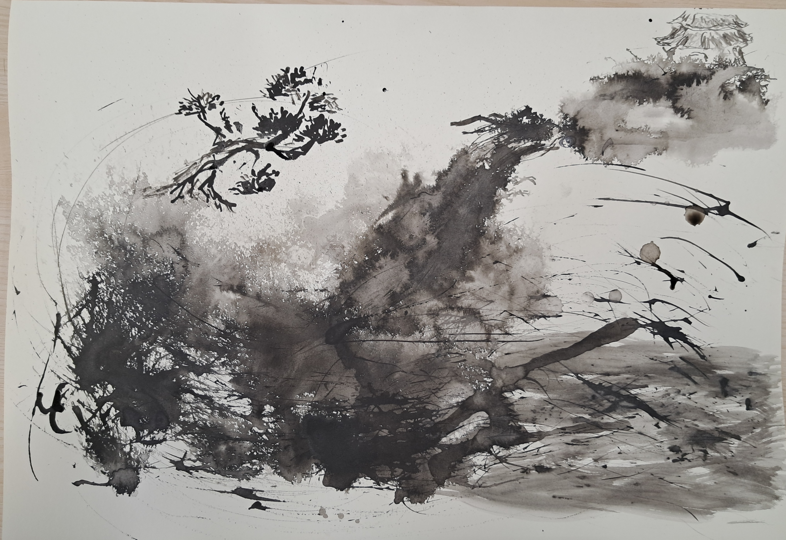
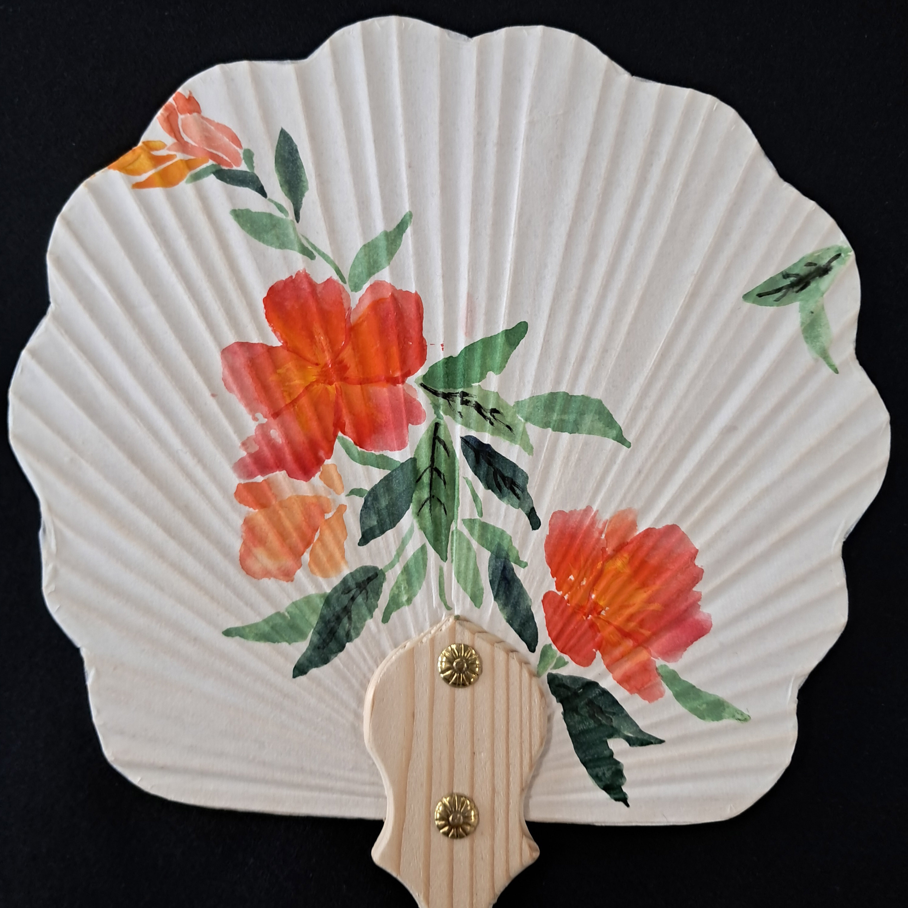

WORK OF ART

바다: 지판화
이 프로젝트는 오목판화 기법을 사용하여 찍어낸 지판화입니다.
상세 설명
평소 좋아하는 고래상어와 가오리, 해파리 등의 해양생물과 바다를 주제로 종이에 조각하여 오목판화 기법으로 찍어낸 작품입니다. 잉크를 닦아낼때 특정한 모양으로 닦아내어 바다 속 물을 흐름을 표현하고자 하였습니다.

승천: 수묵화
이 작품은 다양한 도구를 사용하여 그린 수묵화입니다.
상세 설명
먹과 나뭇가지, 분무기를 사용하여 바닷가에서 용이 승천하는 모습을 표현한 그림입니다. 나뭇가지의 가지 부분으로 소나무와 용의 뿔 등을 표현하였고, 먹을 칠한 부분에 분무기를 뿌려 절벽에 파도가 치는듯한 표현이나 용의 형태를 표현하였습니다.
능소화 부채: 한국화
한국화 기법을 사용하여 작업한 능소화 부채입니다.
상세 설명
한국화 수업의 일환으로 여름을 맞아 능소화를 그려 작업한 부채입니다. 붓에 여러 색을 먹여 색을 덧칠하지 않고 한 번에 꽃잎을 표현하는 한국화기법이 처음이라 흥미롭게 작업하였습니다.
다른 작품

능소화 둥근 부채

책가도
민화의 한 종류인 책가도를 그린 작품입니다.
상세 설명
기존의 책가도를 모작한 작품입니다. 한지에 아교칠을 하여 찢어지지 않고 물감이 올라갈 수 있도록 작업한 다음, 전통적인 채색 재료인 분채를 아교와 섞어 물감으로 사용하였습니다. 세로로 긴 원작을 정사각형의 캔버스에 맞도록 변형하여 작업하였습니다.
과정
스케치

채색

흰색 채색